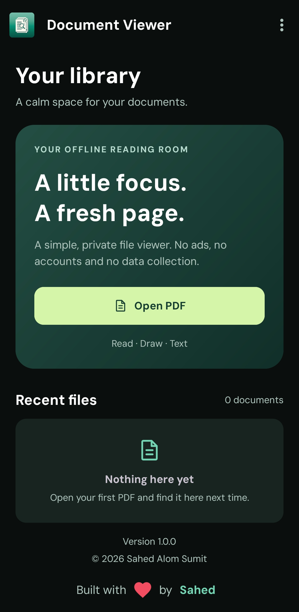
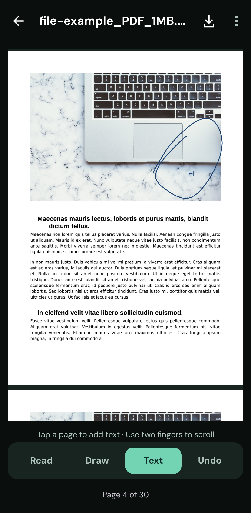
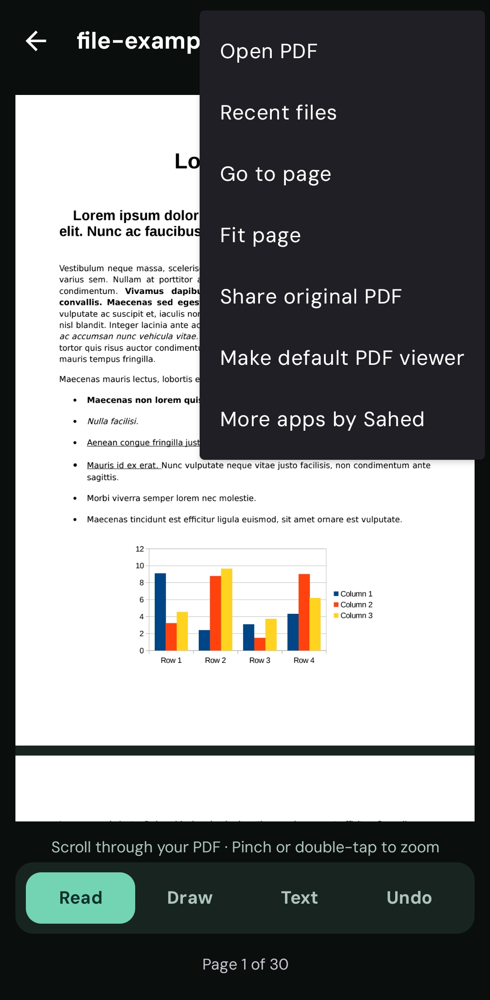
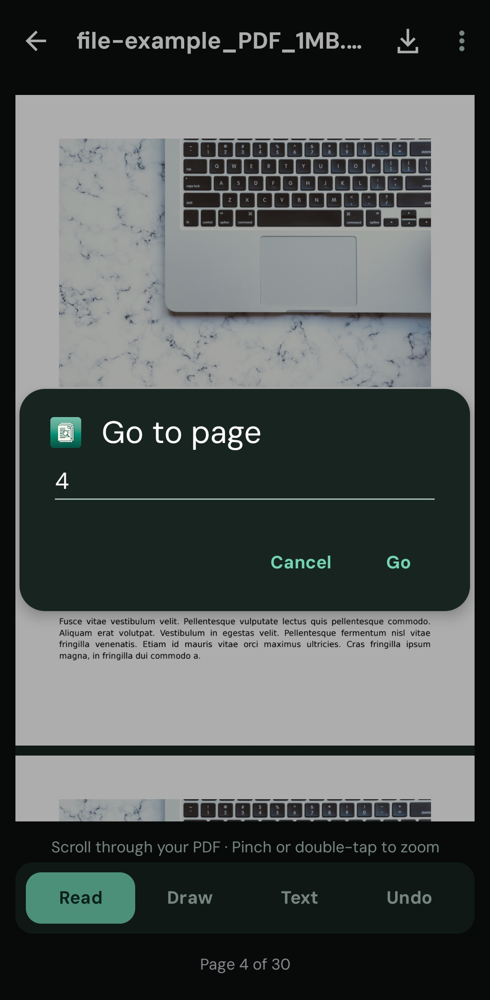
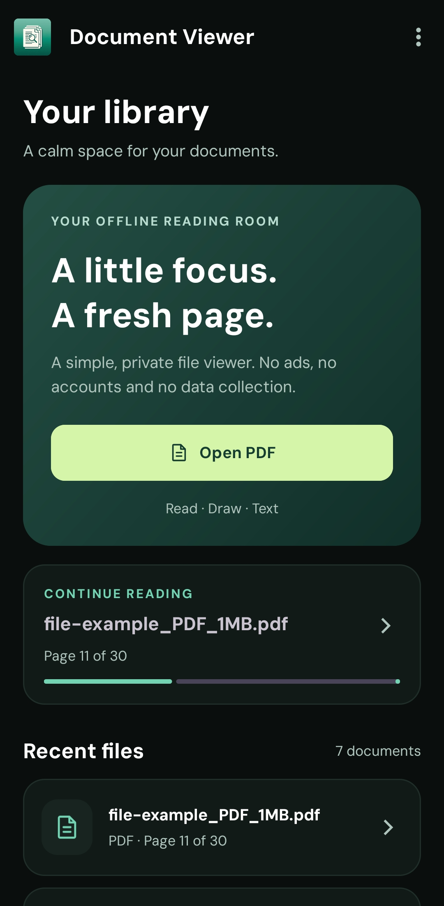
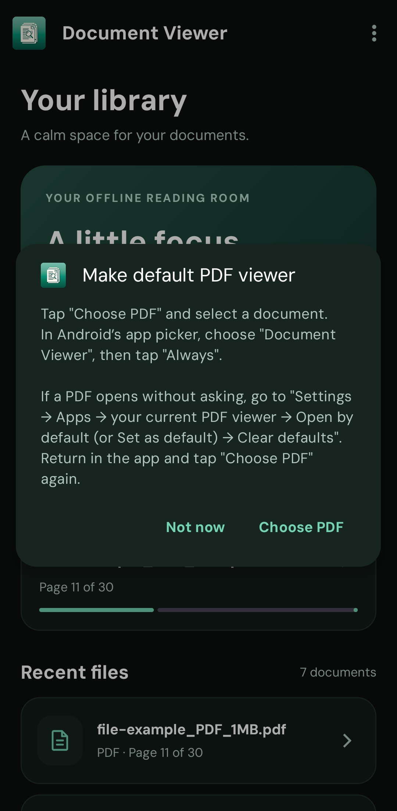
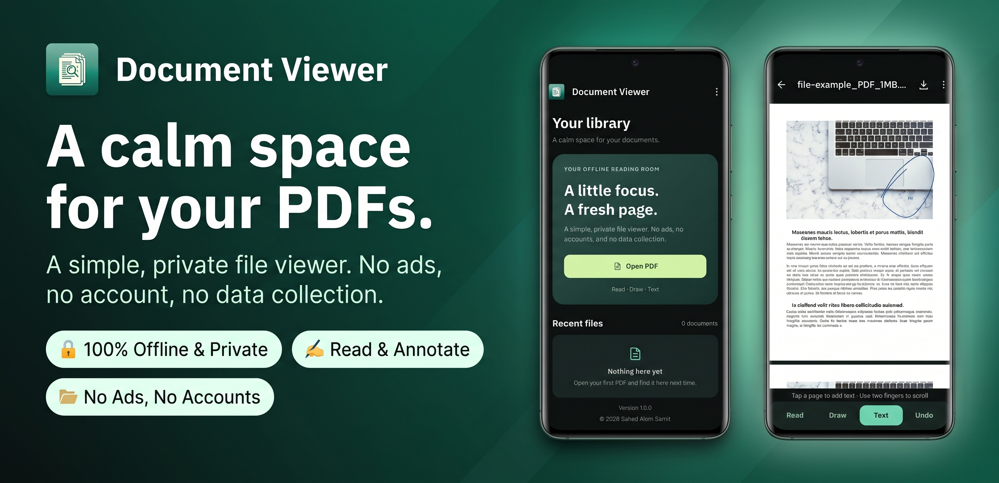

Settle into the page.
Scroll continuously, pinch or double-tap to zoom, and jump straight to the page you need. A dark, emerald-accented interface keeps the controls out of your way.
Your pace. Your perspective.LESS NOISE. MORE READING.
A calm space for your PDFs. Read, draw, and add your thoughts — without the ads, accounts, or distractions.
Made for Android 7.0+ · PDF files only

JUST THE TOOLS YOU NEED
From the first page to your last note, a little less friction and a lot more focus.
Scroll continuously, pinch or double-tap to zoom, and jump straight to the page you need. A dark, emerald-accented interface keeps the controls out of your way.
Your pace. Your perspective.Draw on a page or tap to add typed text. Undo marks as you go, and use two fingers to move or zoom while drawing.
Read · Draw · Text · UndoYour last page is remembered automatically. A continue-reading card and a library of up to 12 recent PDFs make coming back feel effortless.
A little continuity, built in.A LOOK INSIDE · 6 REAL APP SCREENS
One button between you and your PDF.

Draw and add text right on the page.

Useful tools, without the clutter.

Go straight to a particular page.

Your recent files and reading progress.

Set it as your default through Android.
Scroll to explore all six screens
MAKE A COPY. KEEP THE ORIGINAL.
Export your drawings and typed notes as a separate marked-up PDF. Choose where to save it using Android’s file picker.
Save before leaving the document: unsaved marks are discarded. Exported pages are flattened into images, so searchable text, links, forms, and accessibility tags are not preserved in the copy.
Choose a PDF from the Android file picker.
Draw a line, add a note, make it yours.
Export your marks before you leave.
PRIVATE IS THE DEFAULT
A reading room doesn’t need to know who you are.
No sign-up. No advertising SDKs. No analytics. The Android app doesn’t even request internet permission. Your PDFs are processed on your device, not uploaded to us.
Recent-file names and reading progress stay in the app’s local storage. You choose which files to open, where to export, and whether to share with another app.
Read our privacy policyA CALM SPACE FOR YOUR PDFS

A FEW THINGS TO KNOW
Document Viewer currently supports PDF files only. Word documents, spreadsheets, and presentations are not supported. Password-protected, damaged, or unavailable PDFs may not open.
Yes. Reading and annotating local PDFs work offline. The app has no internet permission. If you choose a file from a cloud provider in Android’s file picker, that provider may need a connection to make the file available.
No. Reading progress is remembered automatically, but drawings and added text must be exported as a separate PDF before you leave the document. The original is unchanged. Exported pages are flattened images.
Yes. Open a PDF from Files, choose Document Viewer in Android’s app picker, and tap Always when offered. If another app opens automatically, clear that app’s defaults in Android Settings first.
Clear the app’s storage in Android Settings or uninstall it to remove local app data. Original PDFs and exported copies saved outside the app must be deleted separately with your file manager. See the full data-deletion guide.
YOUR NEXT PAGE IS WAITING
Your offline reading room, ready when you are.
GET IT ONGoogle PlayAndroid 7.0+ · No account needed